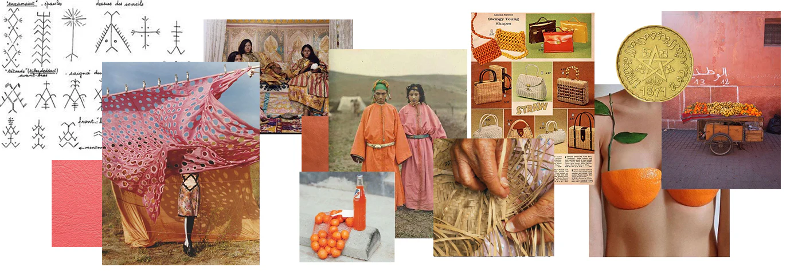
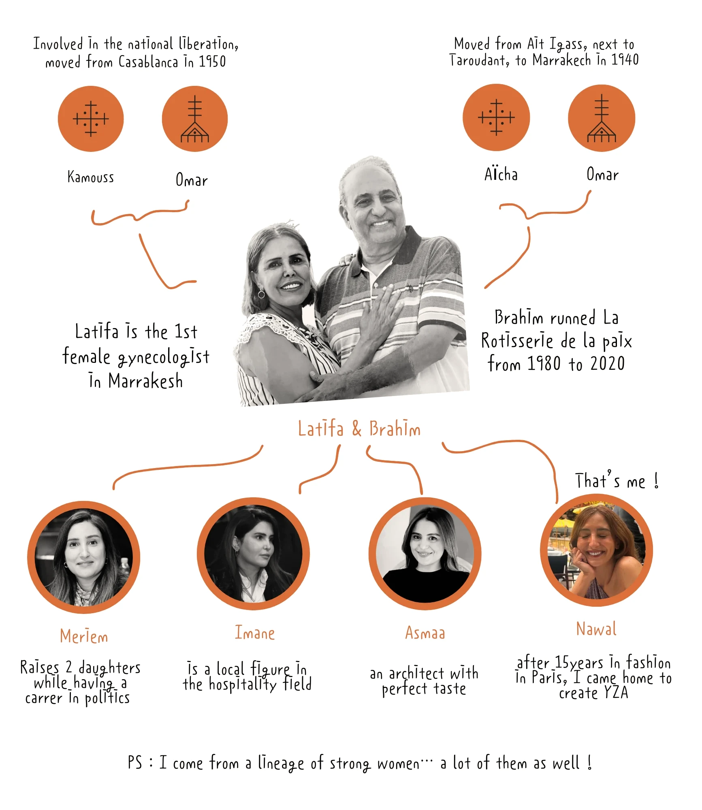
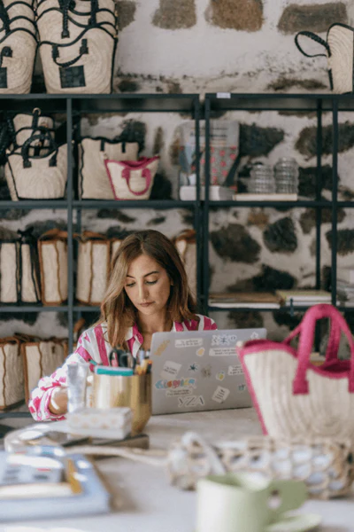
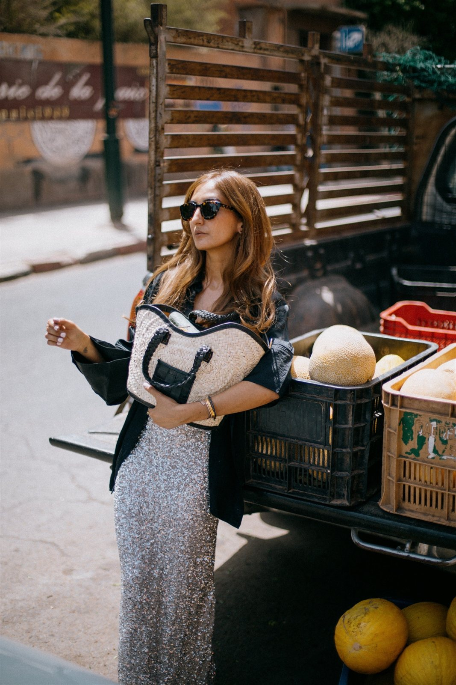
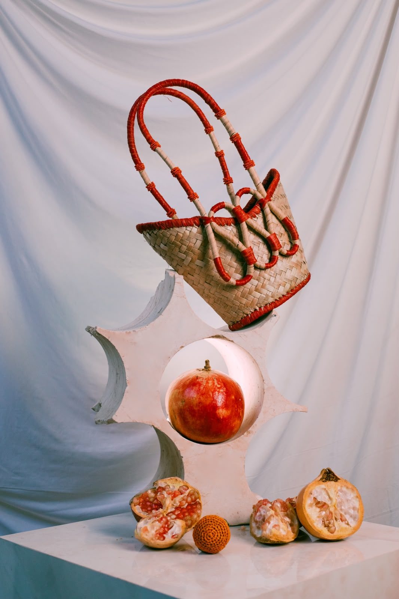
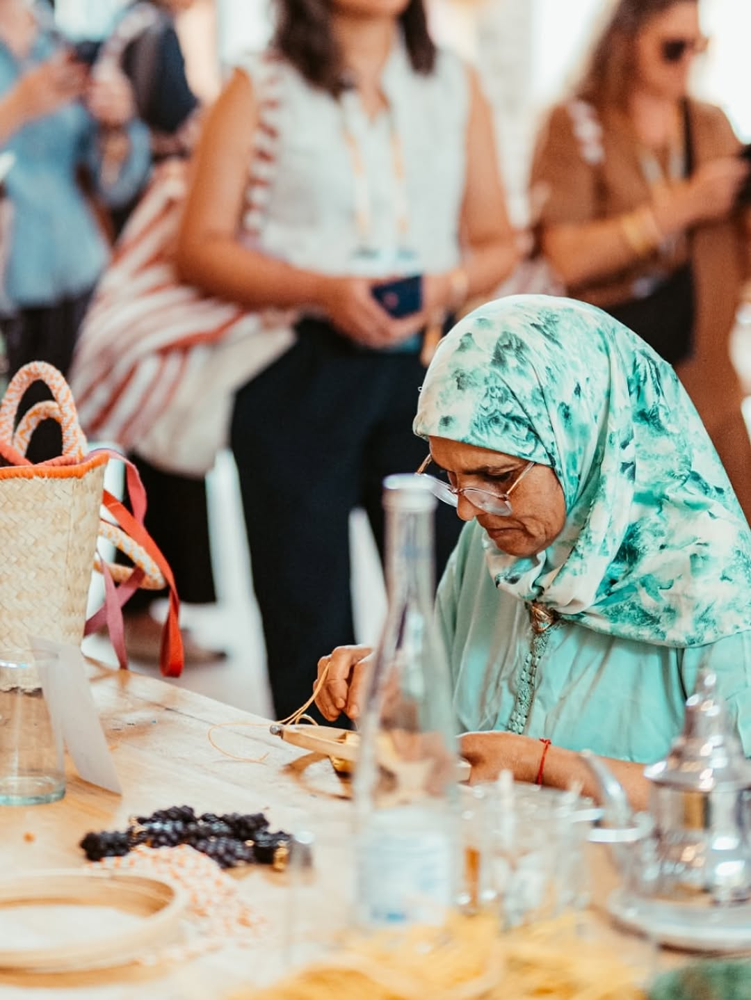
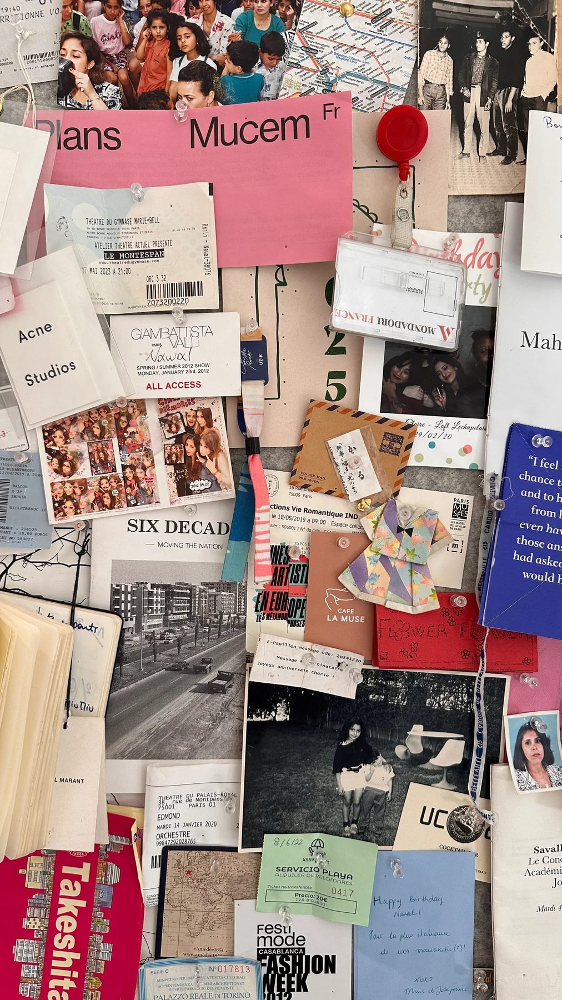

Enracinée à Marrakech,
faite pour le monde entierRooted in Marrakech,
Crafted for the whole worldCon raíces en Marrakech,
hecha para todas partesMarrakech'e kök salmış,
her yer için yapılmışمتجذّرة في مراكش،
مصنوعة لكل مكان
YZA, ⴰⵣⵉ, ييزة — un prénom de fille amazighe, celui que ma grand-mère aurait lancé d'un bout à l'autre d'une cour. Il porte la force, la résilience et le chemin du retour. Pour moi, YZA est moins une marque qu'une façon de vivre — féminine, libre, un peu impertinente ; proche des gestes anciens, et résolument moderne.YZA, ⴰⵣⵉ, ييزة - an Amazigh girl's name, the one my grandmother might have called across a courtyard. It holds strength, resilience, and the road home. For me, YZA is less a label than a way of living - feminine, free, a little cheeky; close to the old ways, and unmistakably modern.YZA, ⴰⵣⵉ, ييزة — un nombre de niña amazigh, el que mi abuela habría llamado de un extremo a otro de un patio. Encierra fuerza, resiliencia y el camino de vuelta a casa. Para mí, YZA es menos una marca que una forma de vivir — femenina, libre, un poco terca; cercana a lo de siempre y inconfundiblemente moderna.YZA, ⴰⵣⵉ, ييزة — bir Amazigh kız adı; büyükannemin bir avlunun bir ucundan seslenebileceği isim. Güç, dayanıklılık ve eve dönüş yolunu taşır. Benim için YZA bir markadan çok bir yaşam biçimi — kadınsı, özgür, biraz inatçı; eski geleneklere yakın ve açıkça modern.YZA، ⴰⵣⵉ، ييزة — اسم فتاة أمازيغية، الاسم الذي ربما نادت به جدّتي من طرف الفناء إلى طرفه الآخر. يحمل القوة والصمود وطريق العودة إلى الديار. بالنسبة لي، YZA ليست علامة بقدر ما هي أسلوب حياة — أنثوية، حرّة، عنيدة قليلًا؛ قريبة من العادات العريقة، وعصرية بلا لبس.
Les femmes, l'artisanat, la couleur — une marque née et qui évolue à Guéliz, Marrakech. C'est le Modern Marrakech Wear™, le vestiaire moderne local : des pièces qui portent une grande histoire, faites pour durer, pour se porter, pour passer à la paire de mains suivante. Une histoire qu'on écrit ensemble.Women, craft, colour - a brand born and growing in Guéliz, Marrakech. This is Modern Marrakech Wear™, the local modern wardrobe: pieces that carry a long story, made to keep, to wear, to pass to the next pair of hands. A story we write together.Mujeres, artesanía, color — nacidos en una sola calle de Guéliz, hechos a mano en Marrakech. Esto es Modern Marrakech Wear™: pequeños objetos que llevan una larga historia, hechos para conservar, para llevar, para pasar al siguiente par de manos. Una historia que escribimos juntas.Kadınlar, zanaat, renk — Guéliz'de tek bir sokakta doğdu, Marrakech'te elle yapıldı. Bu, Modern Marrakech Wear™: uzun bir hikâye taşıyan küçük nesneler; saklamak, taşımak ve bir sonraki ele devretmek için yapılmış. Birlikte yazdığımız bir hikâye.النساء، الحرفة، اللون — وُلدت في شارع واحد بحي Guéliz، مصنوعة يدويًا في مراكش. هذا هو Modern Marrakech Wear™: أشياء صغيرة تحمل حكاية طويلة، صُنعت لتُحفظ، ولتُرتدى، ولتُسلَّم إلى اليد التالية. حكاية نكتبها معًا.

Trois générations à GuélizThree Generations in GuélizTres generaciones en GuélizGuéliz'de üç kuşakثلاثة أجيال في Guéliz
Tout commence il y a trois générations, sur une seule rue — du restaurant de mon père, la Rôtisserie de la Paix, où la cuisine marchait à l'instinct et au plaisir de nourrir, jusqu'au Studio YZA d'aujourd'hui, qui se trouve dans le bâtiment adjacent. Le bâtiment date des années 1940 — d'abord le bar Keys Club, puis le centre culturel français ; la famille l'a repris en 1990, et depuis 2025 il abrite le studio. Guéliz, c'est là qu'on vit, qu'on fabrique, qu'on continue d'apprendre. Nos racines y sont profondes — et ce qu'on transmet, c'est l'habitude de faire les choses à la main.It begins three generations ago, on a single street - from my father's restaurant, the Rôtisserie de la Paix, where the kitchen ran on instinct and feeding people, to YZA Studio today, in the adjacent building. The building dates to the 1940s - once the Keys Club bar, then the French cultural centre; the family took it on in 1990, and since 2025 it holds the studio. Guéliz is where we live, where we make, where we keep learning. Our roots run deep here - and what we hand down is the habit of making something by hand.Todo empieza hace tres generaciones, en una sola calle — desde el restaurante de mi padre, la Rôtisserie de la Paix, donde la cocina funcionaba por instinto y por el placer de alimentar, hasta el Studio YZA de hoy, en el edificio contiguo. El edificio es de los años 1940 — primero el bar Keys Club, luego el centro cultural francés; la familia lo tomó en 1990, y desde 2025 alberga el studio. Guéliz es donde vivimos, donde creamos, donde seguimos aprendiendo. Aquí nuestras raíces son profundas — y lo que transmitimos es la costumbre de hacer algo a mano.Her şey üç kuşak önce, tek bir sokakta başlar — babamın lokantası Rôtisserie de la Paix'ten, mutfağın içgüdüyle ve insanları doyurma sevgisiyle döndüğü yerden, bitişik binadaki bugünün YZA Studio'suna kadar. Bina 1940'lardan kalma — önce Keys Club bar, sonra Fransız kültür merkezi; aile 1990'da devraldı ve 2025'ten beri stüdyoyu barındırıyor. Guéliz, yaşadığımız, ürettiğimiz, öğrenmeyi sürdürdüğümüz yer. Köklerimiz burada derin — ve devrettiğimiz şey, bir şeyi elle yapma alışkanlığı.تبدأ الحكاية قبل ثلاثة أجيال، في شارع واحد — من مطعم والدي، Rôtisserie de la Paix، حيث كان المطبخ يسير بالحدس وبحبّ إطعام الناس، إلى استوديو YZA اليوم، في المبنى المجاور. يعود المبنى إلى أربعينيات القرن الماضي — كان أولًا حانة Keys Club، ثم المركز الثقافي الفرنسي؛ تولّته العائلة عام 1990، ومنذ 2025 يحتضن الاستوديو. Guéliz هي حيث نعيش، وحيث نصنع، وحيث نواصل التعلّم. جذورنا هنا عميقة — وما نورّثه هو عادة صنع الأشياء باليد.


À propos de NawalAbout NawalSobre la fundadora, Nawal RmiliKurucu hakkında: Nawal Rmiliعن المؤسِّسة، Nawal Rmili
Pendant près de quinze ans, j'ai été styliste et assistante à Paris — pour Vogue, Grazia et Marie Claire. J'y ai appris l'œil, la rigueur, les longues journées. Mais je revenais sans cesse vers la couleur, la culture et le lien — vers quelque chose que la main pouvait tenir. Alors je suis rentrée à Marrakech et j'ai lancé YZA, ma réponse à une envie simple : plus de sens et plus d'éthique dans la mode. Une entreprise 100 % féminine, des artisanes rémunérées au juste prix, des matières locales qui durent — la beauté ne vaut que si elle fait vivre celles qui la créent. Le but n'est pas la vitesse, c'est l'intention. On dessine le vestiaire moderne de Marrakech : fait main, fait pour durer, en édition limitée.For nearly fifteen years I was a stylist and assistant in Paris - for Vogue, Grazia and Marie Claire. I learned the eye, the rigour, the long days. But I kept reaching for colour, culture and connection - for something the hand could hold. So I came home to Marrakech and began YZA, my answer to a simple longing: more meaning and more ethics in fashion. A 100% women-run company, artisans paid fairly, local materials that last - beauty only counts if it supports the women who create it. The aim isn't speed; it's intention. We design the modern wardrobe of Marrakech: hand-made, made to last, in limited editions.Durante casi quince años fui estilista y asistente en París — para Vogue, Grazia y Marie Claire. Aprendí la mirada, el rigor, los días largos. Pero seguía buscando color, cultura y vínculo — algo que la mano pudiera sostener. Así que volví a Marrakech y empecé YZA, mi respuesta a un anhelo sencillo: más sentido y más ética en la moda. Una empresa 100 % femenina, artesanas pagadas con justicia, materiales locales que duran — la belleza solo vale si sostiene a quienes la crean. El objetivo no es la velocidad, es la intención. Diseñamos el vestuario moderno de Marrakech: hecho a mano, hecho para durar, en ediciones limitadas.Yaklaşık on beş yıl Paris'te stilist ve asistan olarak çalıştım — Vogue, Grazia ve Marie Claire için. Gözü, titizliği, uzun günleri öğrendim. Ama hep renge, kültüre ve bağa uzandım — elin tutabileceği bir şeye. Böylece Marrakech'e döndüm ve YZA'yı kurdum; basit bir özlemin yanıtı: modada daha çok anlam ve daha çok etik. %100 kadın bir şirket, hakça ücret alan zanaatkârlar, uzun ömürlü yerel malzemeler — güzellik ancak onu yaratan kadınları geçindiriyorsa değerlidir. Amaç hız değil, niyet. Marrakech'in modern gardırobunu tasarlıyoruz: elde yapılmış, kalıcı, sınırlı sayıda.لما يقارب خمسة عشر عامًا عملت ستايليست ومساعدة في باريس — لـ Vogue وGrazia وMarie Claire. تعلّمت العين، والدقّة، والأيام الطويلة. لكنّي ظللت أنجذب نحو اللون والثقافة والصلة — نحو شيء تستطيع اليد أن تمسكه. فعدت إلى مراكش وأطلقت YZA، جوابي على حنينٍ بسيط: معنى أعمق وأخلاقيات أكثر في الموضة. شركة نسائية 100٪، حرفيّات يتقاضين أجرًا عادلًا، وموادّ محلية تدوم — فالجمال لا قيمة له إن لم يُعِل من يصنعنه. الغاية ليست السرعة، بل النيّة. نصمّم خزانة مراكش العصرية: مصنوعة يدويًا، صُنعت لتدوم، بإصدارات محدودة.
MANIFESTO
- Nous sommes le Modern Marrakech Wear™.We are Modern Marrakech Wear™.Somos Modern Marrakech Wear™.Biz Modern Marrakech Wear™'iz.نحن Modern Marrakech Wear™.
- Nous prenons les pièces du quotidien du vestiaire local et les réinventons.We take the everyday pieces of the local wardrobe and make them new.Tomamos las prendas cotidianas del vestuario local y las renovamos.Yerel gardırobun gündelik parçalarını alır, yeniden yaratırız.نأخذ القطع اليومية من خزانة الملابس المحلية ونجدّدها.
- Nous croyons en la simplicité — et y trouvons une beauté discrète.We trust simplicity - and find, in it, the quiet kind of beauty.Confiamos en la simplicidad — y hallamos en ella una belleza serena.Sadeliğe güveniriz — ve onda sessiz bir güzellik buluruz.نثق بالبساطة — ونجد فيها جمالًا هادئًا.
- Nous honorons l'héritage : ses techniques, ses histoires, ses rues.We honour heritage: its techniques, its stories, its streets.Honramos el patrimonio: sus técnicas, sus historias, sus calles.Mirasa saygı duyarız: tekniklerine, hikâyelerine, sokaklarına.نُكرّم التراث: تقنياته، حكاياته، شوارعه.
- Plus de mains, moins de machines, moins de gaspillage, plus de sens.More hands, fewer machines, less waste, more meaning.Más manos, menos máquinas, menos desperdicio, más sentido.Daha çok el, daha az makine, daha az israf, daha çok anlam.أيادٍ أكثر، آلات أقل، هدرٌ أقل، ومعنىً أعمق.
- Nous choisissons la main plutôt que la machine, le fait plutôt que le fait-vite.We choose the hand over the machine, the made over the made-fast.Elegimos la mano sobre la máquina, lo hecho sobre lo hecho-deprisa.Makineye karşı eli, hızla yapılana karşı yapılanı seçeriz.نختار اليد على الآلة، والمصنوع على المصنوع على عجل.
- Nous concevons avec le temps, et nous fabriquons avec le cœur.We design with time, and we make from the heart.Diseñamos con tiempo y creamos desde el corazón.Zamanla tasarlar, yürekten yaparız.نصمّم على مهل، ونصنع من القلب.
- La couleur est une culture. L'artisanat, un langage.Colour is culture. Craft is language.El color es cultura. La artesanía, un lenguaje.Renk bir kültürdür. Zanaat bir dildir.اللون ثقافة. والحرفة لغة.
- Nous grandissons par les femmes — celles qui font, celles qui portent, celles qui transmettent.We grow through women - those who make, those who wear, those who pass it on.Crecemos a través de las mujeres — las que hacen, las que llevan, las que transmiten.Kadınlarla büyürüz — yapanlar, taşıyanlar, aktaranlar.ننمو بالنساء — اللواتي يصنعن، واللواتي يرتدين، واللواتي يورّثن.
- La beauté vit dans la communauté — dans le lien, la lignée, le geste de faire.Beauty lives in community - in connection, in lineage, in the making.La belleza vive en la comunidad — en el vínculo, el linaje, el hacer.Güzellik toplulukta yaşar — bağda, soyda, yapma eyleminde.الجمال يحيا في الجماعة — في الصلة، والنَّسَب، وفعل الصنع.
L’évolutionThe evolutionLa evoluciónEvrimالتطوّر
La marque, collection après collectionThe brand, collection by collectionLa marca, colección a colecciónMarka, koleksiyon koleksiyonالعلامة، مجموعةً بعد مجموعة
Du premier panier au vestiaire complet — chaque collection prolonge la précédente, du geste au vêtement.From the first basket to a full wardrobe — each collection carries on from the last, from gesture to garment.Del primer cesto al vestuario completo — cada colección prolonga la anterior, del gesto a la prenda.İlk sepetten eksiksiz bir gardıroba — her koleksiyon bir öncekini sürdürür, el işinden giysiye.من السلة الأولى إلى خزانة كاملة — كل مجموعة تواصل سابقتها، من الحرفة إلى الثوب.
-

La Vague
le panier fondateur, tressé main : la pièce qui a lancé YZA.the founding basket, hand-woven: the piece that started YZA.el cesto fundador, tejido a mano: la pieza que inició YZA.kurucu sepet, elde dokunmuş: YZA’yı başlatan parça.السلة المؤسِّسة، منسوجة يدويًا: القطعة التي بدأت بها YZA.
-

La Vaguelette
le petit format du quotidien : même geste, échelle réduite.the little everyday format: same gesture, smaller scale.el formato pequeño de diario: mismo gesto, escala reducida.gündelik küçük boy: aynı el işi, küçük ölçek.الحجم الصغير اليومي: الحرفة ذاتها بمقياس أصغر.
-

La Nouvelle Vague
la ligne repensée : anses tressées, perles, nouvelles couleurs.the line reimagined: braided handles, beads, new colours.la línea reinventada: asas trenzadas, cuentas, nuevos colores.yeniden yorumlanan seri: örgü saplar, boncuklar, yeni renkler.الخط المعاد ابتكاره: مقابض مضفورة، خرز، ألوان جديدة.
-

La Sculpture
l’it-bag sculptural : des anses travaillées comme un bijou.the sculptural it-bag: handles worked like jewellery.el it-bag escultural: asas trabajadas como una joya.heykelsi it-bag: mücevher gibi işlenmiş saplar.حقيبة منحوتة: مقابض مشغولة كقطعة حُليّ.
-

Les Fruits en RaphiaThe Raffia FruitsLos Frutos de RafiaRafya Meyvelerفواكه الرافيا
charms et bijoux crochetés : le Fruit Market, un peu de Marrakech à accrocher.crocheted charms and jewellery: the Fruit Market, a piece of Marrakech to clip on.charms y joyas de ganchillo: el Fruit Market, un trozo de Marrakech para colgar.tığ işi charm’lar ve takılar: Fruit Market, çantanıza asılacak bir parça Marakeş.تمائم ومجوهرات كروشيه: سوق الفاكهة، قطعة من مراكش تُعلّق.
-

Jawhara
Un vestiaire complet et modulable pensé pour voyager et évoluer avec vous.A complete, modular wardrobe made to travel and to evolve with you.Un vestuario completo y modulable pensado para viajar y evolucionar contigo.Seyahat etmek ve sizinle birlikte gelişmek için tasarlanmış, eksiksiz ve modüler bir gardırop.خزانة كاملة ومرنة، صُممت للسفر ولتتطوّر معك.

66 rue Yougoslavie, Guéliz · Marrakech
Un atelier de femmes à MarrakechA Women's Atelier in MarrakechUn atelier de mujeres en MarrakechMarrakech'te bir kadın atölyesiأتيليه نسائي في مراكش
Toute l’entreprise YZA est 100 % féminine — de l’atelier à la boutique. Rencontrez les femmes de l’atelier qui façonnent, brodent et cousent chaque pièce.The whole YZA company is 100% women-run — from atelier to boutique. Meet the women of the atelier who shape, embroider and sew every piece.Toda la empresa YZA es 100 % femenina — del atelier a la boutique. Conoce a las mujeres del atelier que dan forma, bordan y cosen cada pieza.YZA’nın tamamı %100 kadınlardan oluşur — atölyeden butiğe. Her parçayı şekillendiren, işleyen ve diken atölye kadınlarıyla tanışın.شركة YZA نسائية 100٪ — من الأتيليه إلى البوتيك. تعرّفي إلى نساء الأتيليه اللواتي يشكّلن ويطرّزن ويخطن كل قطعة.
Chaque pièce naît ici — du fil brut à la finition cuir. Raphia, doum, feuille de bananier : les matières arrivent brutes et repartent en objets finis, une à une. Aucun moule. Aucun raccourci. Juste des mains, du temps, et 37 ans de geste dans la pièce.Every piece begins here - from raw thread to leather finish. Raffia, doum, banana leaf: the materials arrive rough and leave as finished objects, one at a time. No moulds. No shortcuts. Just hands, time, and 37 years of gesture in the room.Cada pieza nace aquí — del hilo en bruto al acabado en cuero. Rafia, doum, hoja de banano: los materiales llegan en bruto y salen como objetos terminados, uno a uno. Sin moldes. Sin atajos. Solo manos, tiempo y 37 años de gesto en la sala.Her parça burada doğar — ham iplikten deri finişe. Rafya, doum, muz yaprağı: malzemeler ham gelir ve birer birer bitmiş nesneler olarak çıkar. Kalıp yok. Kestirme yok. Yalnızca eller, zaman ve odadaki 37 yıllık el emeği.تبدأ كل قطعة هنا — من الخيط الخام إلى التشطيب الجلدي. رافيا، دوم، ورق موز: تصل المواد خامًا وتغادر أشياءَ مكتملة، واحدةً تلو الأخرى. لا قوالب. لا اختصارات. فقط أيادٍ ووقت و37 عامًا من الحرفة في الغرفة.
Arts & matièresArts & materialsArtes y materialesSanatlar ve malzemelerفنون وموادّ
Raphia, doum, feuille de bananier et tissu Jawhara arrivent bruts à l’atelier. Ils y sont tressés, crochetés, brodés et cousus à la main — des matières choisies pour durer, portées par des gestes transmis depuis des décennies.Raffia, doum, banana leaf and Jawhara fabric arrive raw at the atelier. They are woven, crocheted, embroidered and sewn by hand — materials chosen to last, shaped by gestures passed down over decades.Rafia, doum, hoja de banano y tejido Jawhara llegan en bruto al atelier. Allí se trenzan, tejen, bordan y cosen a mano — materiales elegidos para durar, trabajados con gestos transmitidos durante décadas.Rafya, doum, muz yaprağı ve Jawhara kumaşı atölyeye ham gelir. Burada elde örülür, tığlanır, işlenir ve dikilir — onlarca yıldır aktarılan el hareketleriyle uzun ömür için seçilmiş malzemeler.تصل الرافيا والدوم وورق الموز وقماش جوهرة خامًا إلى الأتيليه. هناك تُضفّر وتُحاك وتُطرّز وتُخاط يدويًا — مواد مختارة لتدوم، تشكّلها حرف تنتقل منذ عقود.
Le studio est ouvert aux visiteurs. Venez voir le travail en cours — des sacs en plein tissage, les artisanes à l'établi — et repartez avec une pièce, directement des mains qui l'ont faite.The studio is open to visitors. Come see the work in progress - bags mid-weave, artisans at the bench - and bring a piece home directly from the hands that made it.El studio está abierto a las visitas. Ven a ver el trabajo en marcha — bolsos a medio tejer, artesanas en el banco — y llévate una pieza directamente de las manos que la hicieron.Stüdyo ziyaretçilere açık. Süren işi görmeye gelin — yarı örülmüş çantalar, tezgâh başındaki ustalar — ve bir parçayı doğrudan onu yapan ellerden alıp götürün.الاستوديو مفتوح للزوّار. تعالَي لرؤية العمل وهو يجري — حقائب في منتصف الحياكة، حرفيّات على الطاولة — وعودي بقطعة من الأيادي التي صنعتها مباشرة.

Mercredi – dimanche 12 h – 20 h
Lundi 12 h – 16 h · mardi ferméWednesday - Sunday 12h - 20h
Monday 12h - 16h · Tuesday closedMiércoles – domingo 12 h – 20 h
Lunes 12 h – 16 h · martes cerradoÇarşamba – pazar 12.00 – 20.00
Pazartesi 12.00 – 16.00 · salı kapalıالأربعاء – الأحد 12 – 20
الإثنين 12 – 16 · الثلاثاء مغلق